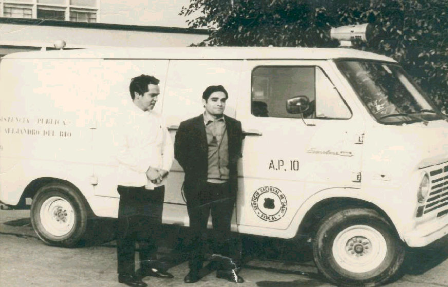
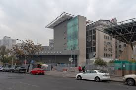

Más de 115 años siendo el corazón de la salud pública de Chile. Conoce la historia, el legado y la misión del Hospital de Urgencia Asistencia Pública.
Curicó 345, Santiago Centro
¿Por qué la Posta Central es patrimonio?
Fundada el 7 de agosto de 1911 por el Dr. Alejandro del Río, fue el primer servicio de urgencia permanente en Chile. Su historia es inseparable de la historia social y sanitaria del país.

El primer servicio de urgencia permanente
En 1911, cuando los heridos eran llevados a cuarteles policiales, el Dr. Alejandro del Río creó el primer centro especializado de atención de emergencias en Chile, en una casona de la calle San Francisco N.º 85.

Cuna del SAMU en Chile
Desde 1976 administra el Servicio de Urgencia de Ambulancias (SUA). En 1995 inauguró el Sistema de Atención Médica de Urgencia (SAMU), transformando para siempre la respuesta de emergencias en el país.

Centro de alta complejidad
Principal punto de derivación nacional del sistema público para pacientes politraumatizados y quemados. Atiende patologías cardiovasculares, accidentes y violencia las 24 horas, todos los días del año.
"Un hecho trascendental para la consolidación de la asistencia hospitalaria moderna."
— Dr. Ricardo Cruz Coke, sobre la inauguración de la Posta Central (1911)